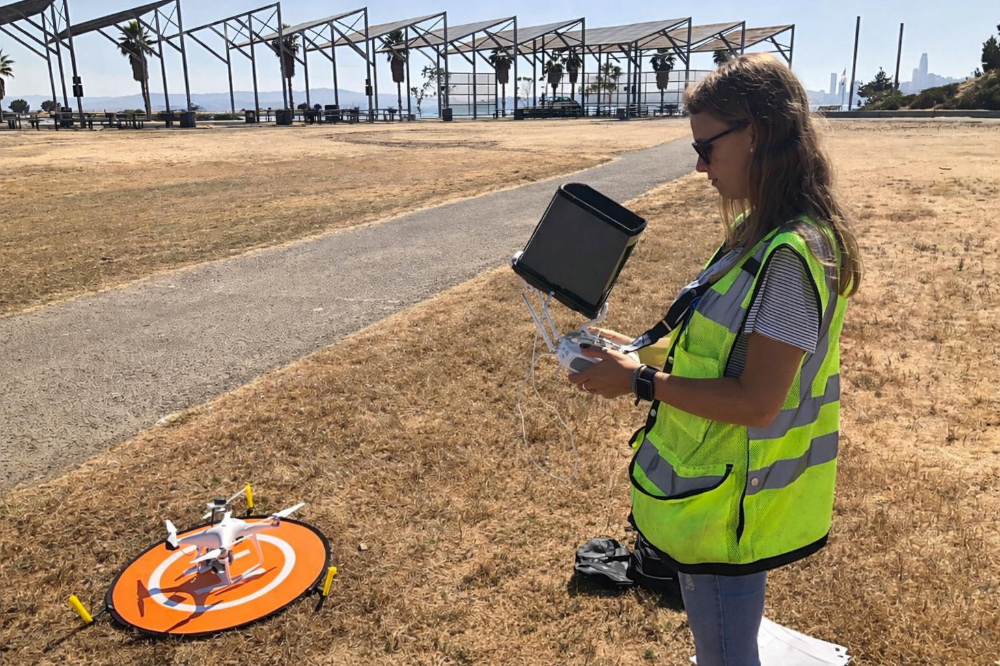
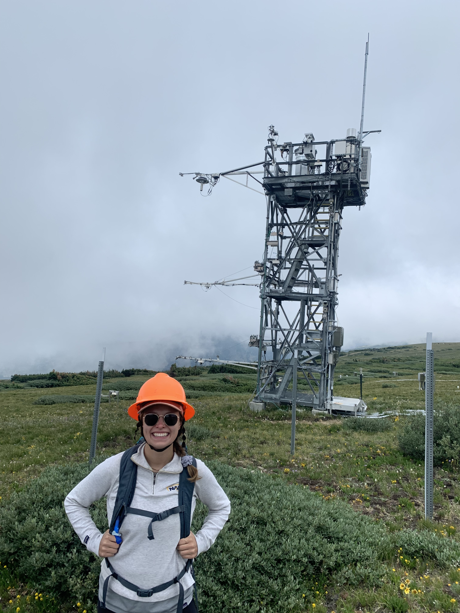

About Me
Hi, I’m Jen Diehl (she/her). Thanks for stopping by!
I’m a postdoctoral research associate at NASA/University of Maryland ESSIC at Goddard Space Flight Center in Greenbelt, MD
I work in the Biospheric Sciences Laboratory, advised by Dr. Andrew Feldman.
Take a look around to learn more about who I am and what I do!


